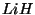
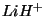
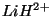

Top-level directives are directives that can affect all modules in the code. Some specify molecular properties (e.g., total charge) or other data that should apply to all subsequent calculations with the current database. However, most top-level directives provide the user with the means to manage the resources for a calculation and to start computations. As the first step in the execution of a job, NWChem scans the entire input file looking for start-up directives, which NWChem must process before all other input. The input file is then rewound and processed sequentially, and each directive is processed in the order in which it is encountered. In this second pass, start-up directives are ignored.
The following sections describe each of the top-level directives in detail, noting all keywords, options, required input, and defaults.
A START or RESTART directive is optional. If one of these two directives is not specified explicitly, the code will infer one, based upon the name of the input file and the availability of the database. When allowing NWChem to infer the start-up directive, the user must be quite certain that the contents of the database will result in the desired action. It is usually more prudent to specify the directive explicitly, using the following format:
(RESTART || START) \
[<string file_prefix default $input_file_prefix$>] \
[rtdb <string rtdb_file_name default $file_prefix$.db>]
The START directive indicates that the calculation is one in
which a new database is to be created. Any relevant information that
already exists in a previous database of the same name is destroyed.
The string variable <file_prefix> will be used as the prefix to
name any files created in the course of the calculation.
E.g., to start a new calculation on water, one might specify
start waterwhich will make all files begin with "water.".
If the user does not specify an entry for <file_prefix> on the
START directive (or omits the START directive
altogether), the code uses the base-name of the input file as the file
prefix. That is, the variable <file_prefix> is assigned the
name of the input file (not its full pathname), but without the last
``dot-suffix''. For example, the input file name
/home/dave/job.2.nw yields job.2 as the file prefix, if
a name is not assigned explicitly using the START directive.
The user also has the option of
specifying a unique name for the database, using the keyword rtdb. When this keyword is entered, the string entered for rtdb_file_name is used as the database name. If the keyword rtbd is omitted, the name of the database defaults to
$<file_prefix>$.db in the directory for permanent files.
If a calculation is to start from a previous calculation and go on
using the existing database, the RESTART directive
must be used. In such a case, the previous
database must already exist. The name specified for <file_prefix>
usually should
not be changed when restarting a calculation. If it is changed, NWChem
will not
be able to find needed files when going on with the
calculation.
In the most common
situation, the previous calculation was completed (with or without an error
condition), and it is desired to perform a new task or restart the
previous one, perhaps with some input changes. In these instances,
the RESTART directive should be used. This reuses the previous
database and associated files, and reads the input file for new input
and task information.
The RESTART directive looks immediately for new input and task
information, deleting information about previous incomplete tasks.
For example, when doing a RESTART there is no need
to specify geometry or basis set declaration because the
program will detect this information since it is stored in the
run-time database.
If a calculation runs out of time, for example because it is
on a queuing system, this is another instance where doing a
RESTART is advisable. Simply include nothing after the
RESTART directive except those tasks that are unfinished.
NOTE: Due to changes in the runtime database structure, RESTART
will not work on database files generated by NWChem versions 4.0.1 and
older.
To summarize the default options for this start-up directive, if the
input file does not contain a START or a
RESTART directive, then
.nw)
$file_prefix$.db
$file_prefix$.db does not
already exist,
the calculation is carried out as if a START directive had
been encountered. If the database with name $file_prefix$.db
does exist, then the calculation is performed as if a
RESTART directive had been encountered.
For example, NWChem can be run using an input file with the name
water.nw
by typing the UNIX command line,
nwchem water.nw
If the NWChem input file water.nw does not contain
a START or RESTART directive, the code
sets the variable <file_prefix> to water. Files created
by the job will have this prefix, and the database will be named
water.db. If the database water.db does not exist already,
the code behaves as if the input file contains the directive,
start water
If the database water.db does exist,
the code behaves as if the input file contained the directive,
restart water
These are start-up directives that allow the user to specify the directory location of scratch and permanent files created by NWChem. NWChem distinguishes between permanent (or persistent) files and scratch (or temporary) files, and allows the user the option of putting them in different locations. In most installations, however, permanent and scratch files are all written to the current directory by default. What constitutes ``local'' disk space may also differ from machine to machine.
The conventions for file storage are at the discretion of the specific installation, and are quite likely to be different on different machines. When assigning locations for permanent and scratch files, the user must be cognizant of the characteristics of the installation on a particular platform. To consider just a few examples, on clusters, machine-specific or process-specific names must be supplied for both local and shared file systems, while on SMPs it is useful to specify scratch file directories with automated striping across processors with round-robin allocation. On SMP clusters (a.k.a. constellations), both of these specifications are required.
The SCRATCH_DIR and PERMANENT_DIR directives are
identical in format and capability, and enable the user to specify a
single directory for all processes, or different directories for
different processes. The general form of the directive is as follows:
(PERMANENT_DIR || SCRATCH_DIR) [(<string host>||<integer process>):] \
<string directory> \
[...]
Directories are extracted from the user input by executing the following steps, in sequence:
".").
The following is a list of examples of specific allocations of scratch directory locations:
scratch_dir /localscratch
/piofs/rjh, but put all
other scratch files in /scratch:
scratch_dir /scratch 0:/piofs/rjh
scr1, those from
Process 1 in scr2, and so forth, in a round-robin fashion, using the
given list of directories:
scratch_dir /scr1 /scr2 /scr3 /scr4 /scr5
scratch_dir coho:/xfs1/rjh coho:/xfs2/rjh coho:/xfs3/rjh \
bohr:/disk01/rjh bohr:/disk02/rjh bohr:/disk13/rjh
This is a start-up directive that allows the user to specify the amount of memory that NWChem can use for the job. If this directive is not specified, memory is allocated according to installation-dependent defaults. The defaults should generally suffice for most calculations, since the defaults usually correspond to the total amount of memory available on the machine. It should usually be unnecessary to provide a memory directive!!!
The general form of the directive is as follows:
MEMORY [[total] <integer total_size>] \
[stack <integer stack_size>] \
[heap <integer heap_size>] \
[global <integer global_size>] \
[units <string units default real>] \
[(verify||noverify)] \
[(nohardfail||hardfail)] \
NWChem recognizes the following memory units:
real and double (synonyms)
integer
byte
kb (kilobytes)
mb (megabytes)
mw (megawords, 64-bit word)
In most cases, the user need specify only the total memory limit to adjust the amount of memory used by NWChem. The following specifications all provide for eight megabytes of total memory (assuming 64-bit floating point numbers), which will be distributed according to the default partitioning:
memory 1048576 memory 1048576 real memory 1 mw memory 8 mb memory total 8 mb memory total 1048576
In NWChem there are three distinct regions of memory: stack, heap,
and global. Stack and heap are node-private, while the union of the
global region on all processors is used to provide globally-shared memory.
The allowed limits on each category are determined from a default
partitioning (currently 25% heap, 25% stack, and 50% global).
Alternatively, the keywords stack, heap, and
global can be used to define specific allocations for each of
these categories. If the user sets only one of the stack, heap, or
global limits by input, the limits for the other two categories are
obtained by partitioning the remainder of the total memory available
in proportion to the weight of those two categories in the default
memory partitioning. If two of the category limits are given, the
third is obtained by subtracting the two given limits from the total
limit (which may have been specified or may be a default value). If
all three category limits are specified, they determine the total
memory allocated. However, if the total memory is also specified, it
must be larger than the sum of all three categories. The code will
abort if it detects an inconsistent memory specification.
The following memory directives also allocate 8 megabytes, but specify a complete partitioning as well:
memory total 8 stack 2 heap 2 global 4 mb memory stack 2 heap 2 global 4 mb
The optional keywords verify and noverify in the
directive give the user the option of enabling or disabling automatic
detection of corruption of allocated memory. The default is
verify, which enables the feature. This incurs some
overhead (which can be around 10% increase in walltime on some platforms),
which can be eliminated by specifying noverify.
The keywords hardfail and nohardfail give the user the
option of forcing (or not forcing) the local memory management
routines to generate an internal fatal error if any memory operation
fails. The default is nohardfail, which allows the code to
continue past any memory operation failure, and perhaps generate a
more meaningful error message before terminating the calculation.
Forcing a hard-fail can be useful when poorly coded applications do
not check the return status of memory management routines.
When assigning the specific memory allocations using the keywords
stack, heap, and global in the MEMORY
directive, the user should be aware that some of the distinctions
among these categories of memory have been blurred in their actual
implementation in the code. The memory allocator (MA) allocates both
the heap and the stack from a single memory region of size heap+stack, without enforcing the partition. The heap vs. stack
partition is meaningful only to applications developers, and can be
ignored by most users. Further complicating matters, the global array
(GA) toolkit is allocated from within the MA space on distributed
memory machines, while on shared-memory machines it is
separate5.2.
On distributed memory platforms, the MA region is actually the total size of
stack+heap+globalAll three types of memory allocation compete for the same pool of memory, with no limits except on the total available memory. This relaxation of the memory category definitions usually benefits the user, since it can allow allocation requests to succeed where a stricter memory model would cause the directive to fail. These implementation characteristics must be kept in mind when reading program output that relates to memory usage.
Standard default for memory is currently 400 MB.
This start-up directive is provided as a convenient way to include a listing of the input file in the output of a calculation. It causes the entire input file to be printed to Fortran unit six (standard output). It has no keywords, arguments, or options, and consists of the single line:
ECHO
The ECHO directive is processed only
once, by Process 0 when the input file is read.
This top-level directive allows the user to identify a job or series of jobs that use a particular database. It is an optional directive, and if omitted, the character string containing the input title will be empty. Multiple TITLE directives may appear in the input file (e.g., the example file in Section 2.3) in which case a task will use the one most recently specified. The format for the directive is as follows:
TITLE <string title>
The character string <title> is assigned to the contents of the
string following the TITLE directive. If the string contains
white space, it must be surrounded by double quotes. For example,
title "This is the title of my NWChem job"
The title is stored in the database and will be used in all subsequent tasks/jobs until redefined in the input.
The PRINT and NOPRINT directives allow the user to
control how much output NWChem generates. These two directives are
special in that the compound directives for all modules are
supposed to recognize them. Each module can control both the overall
print level (general verbosity) and the printing of individual items
which are identified by name (see below). The standard form of the
PRINT directive is as follows:
PRINT [(none || low || medium || high || debug) default medium] \
[<string list_of_names ... >]
NOPRINT <string list_of_names ... >
The default print level is medium.
Every output that is printed by NWChem has a print threshold
associated with it. If this threshold is equal to or lower than the
print level requested by the user, then the output is generated. For
example, the threshold for printing the SCF energy at convergence is
low (Section 10.16). This means that if the
user-specified print level on the PRINT directive is
low, medium, high, or debug, then the SCF
energy will be printed at convergence.
The overall print level specified
using the PRINT directive is a convenient tool for controlling
the verbosity
of NWChem. Setting the print level to high might be helpful in
diagnosing convergence problems. The print level of debug might
also be of use in evaluating problem cases, but the user should be aware
that this can generate a huge amount of output. Setting the print level
to low might be the preferable choice for geometry
optimizations that will perform many steps which are in themselves of
little interest to the user.
In addition, it is possible to enable the printing of specific
items by naming them in the PRINT directive in the
<list_of_names>. Items identified in this way will be printed,
regardless of the overall print level specified. Similarly, the
NOPRINT directive can be used to suppress the printing of specific
items by naming them in its <list_of_names>. These items will
not be printed, regardless of the overall print level, or the
specific print level of the individual items.
The list of items that can be printed for each module is documented
as part of the input instructions for that module.
The items recognized by the top level of the code, and their thresholds,
are:
|
The following example shows how a PRINT directive for the top level
process can be used to limit printout to only essential information.
The directive is
print none "ma stats" rtdb
This directive instructs the NWChem main program to print nothing,
except for the memory usage statistics (ma stats) and
the names of all items stored in the database at the end of the job.
The print level within a module is inherited from the calling layer. For instance, by specifying the print to be low within the MP2 module will cause the SCF, CPHF and gradient modules when invoked from the MP2 to default to low print. Explicit user input of print thresholds overrides the inherited value.
This top-level directive allows the user to enter data directly into the run-time database (see Section 3.1 for a description of the database). The format of the directive is as follows:
SET <string name> [<string type default automatic>] <$type$ data>
The entry for variable <name> is the name of
data to be entered into the database. This must be specified; there is no default. The variable <type>, which is
optional, allows the user to define a string specifying the type of
data in the array <name>. The data type can be explicitly
specified as integer, real, double,
logical, or string. If no entry for <type> is
specified on the directive, its value is inferred from the data type
of the first datum. In such a case, floating-point data
entered using this directive must include either an exponent or a
decimal point, to ensure that the correct default type will be
inferred. The correct default type will be inferred for logical
values if logical-true values are specified as .true.,
true, or t, and logical-false values are specified as
.false., false, or f. One exception to the
automatic detection of the data type is that the data type must
be explicitly stated to input integer ranges, unless the first
element in the list is an integer that is not a range (c.f.,
2.4). For example,
set atomid 1 3:7 21will be interpreted as a list of integers. However,
set atomid 3:7 21will not work since the first element will be interpreted as a string and not an integer. To work around this feature, use instead
set atomid integer 3:7 21which says to write three through seven, as well as twenty-one.
The SET directive is useful for providing indirection by
associating the name of a basis set or geometry with the standard
object names (such as "ao basis" or geometry) used by
NWChem. The following input file shows an example using the
SET directive to direct different tasks to different
geometries. The required input lines are as follows:
title "Ar dimer BSSE corrected MP2 interaction energy"
geometry "Ar+Ar"
Ar1 0 0 0
Ar2 0 0 2
end
geometry "Ar+ghost"
Ar1 0 0 0
Bq2 0 0 2
end
basis
Ar1 library aug-cc-pvdz
Ar2 library aug-cc-pvdz
Bq2 library Ar aug-cc-pvdz
end
set geometry "Ar+Ar"
task mp2
scf; vectors atomic; end
set geometry "Ar+ghost"
task mp2
This input tells the code to perform MP2 energy calculations on an argon dimer in the first task, and then on the argon atom in the presence of the ``ghost'' basis of the other atom.
The SET directive can also be used as an indirect means of
supplying input to a part of the code that does not have a separate
input module (e.g., the atomic SCF, Section 10.5.2).
Additional examples of applications of this directive can be found in
the sample input files (see Section 2.3), and
its usage with basis sets (Section 7) and geometries
(Section 6). Also see Section 3.1 for
an example of how to store an array in the database.
This directive gives the user a way to delete simple entries from the database. The general form of the directive is as follows:
UNSET <string name>[*]
This directive cannot be used with complex objects such as geometries
and basis sets5.3. A
wild-card (*) specified at the end of the string <name> will
cause all entries whose name begins with that string to be
deleted. This is very useful as a way to reset modules to their
default behavior, since modules typically store information in the
database with names that begin with module:. For example, the
SCF program can be restored to its default behavior by deleting all
database entries beginning with scf:, using the directive
unset scf:*
Section 10.5.1 has an example using
unset on a water dimer calculation.
The following example makes an entry in the database using the
SET directive, and then immediately deletes it using the
UNSET directive:
set mylist 1 2 3 4 unset mylist
This top-level directive provides a convenient way of verifying an input file without actually running the calculation. It consists of the single line,
STOP
As soon as this directive is encountered, all processing ceases and the calculation terminates with an error condition.
The TASK directive is used to tell the code what to do. The
input directives are parsed sequentially until a TASK directive
is encountered, as described in Section 2.1. At
that point, the calculation or operation specified in the TASK
directive is performed. When that task is completed, the code looks
for additional input to process until the next TASK directive
is encountered, which is then executed. This process continues to the
end of the input file. NWChem expects the last directive before the
end-of-file to be a TASK directive. If it is not, a warning
message is printed. Since the database is persistent, multiple tasks
within one job behave exactly the same as multiple restart jobs
with the same sequence of input.
There are four main forms of the the TASK directive. The most
common form is used to tell the code at what level of theory to
perform an electronic structure calculation, and which specific
calculations to perform. The second form is used to specify tasks
that do not involve electronic structure calculations or tasks that
have not been fully implemented at all theory levels in NWChem, such
as simple property evaluations. The third form is used to execute
UNIX commands on machines having a Bourne shell. The fourth form is
specific to combined quantum-mechanics and molecular-mechanics (QM/MM)
calculations.
By default, the program terminates when a task does not complete
successfully. The keyword ignore can be used to prevent this
termination, and is recognized by all forms of the TASK
directive. When a TASK directive includes the keyword
ignore, a warning message is printed if the task fails, and
code execution continues with the next task. An example of this feature
is given in the sample input file
in Section 11.5.
The input options, keywords, and defaults for each of these four forms
for the TASK directive are discussed in the following sections.
This is the most commonly used version of the TASK directive, and
it has the following form:
TASK <string theory> [<string operation default energy>] [ignore]
The string <theory> specifies the level of theory to be used in the
calculations for this task. NWChem currently supports ten different
options. These are listed below, with the corresponding entry for
the variable <theory>:
scf -- Hartree-Fock
dft -- Density functional theory for molecules
sodft -- Spin-Orbit Density functional theory
mp2 -- MP2 using a semi-direct algorithm
direct_mp2 -- MP2 using a full-direct algorithm
rimp2 -- MP2 using the RI approximation
ccsd -- Coupled-cluster single and double excitations
ccsd(t) -- Coupled-cluster linearized triples approximation
ccsd+t(ccsd) -- Fourth order triples contribution
mcscf -- Multiconfiguration SCF
selci -- Selected configuration interaction with perturbation
correction
md -- Classical molecular dynamics simulation
pspw -- Pseudopotential plane-wave density functional theory for molecules and insulating solids using NWPW
band -- Pseudopotential plane-wave
density functional theory for solids using NWPW
tce -- Tensor Contraction Engine (please see
Section 15.4 for a complete description of this task directive
The string <operation> specifies the calculation that will
be performed in the task. The default operation is a single point energy
evaluation. The following list gives the selection of operations currently
available in NWChem:
energy -- Evaluate the single point energy.
gradient -- Evaluate the derivative of the energy with respect to nuclear coordinates.
optimize -- Minimize the energy by varying the molecular
structure. By default, this geometry optimization is presently driven by the Driver
module (see Section 20), but the Stepper module
(see Section 21) may also be used.
saddle -- Conduct a search for a transition state (or saddle point)
using either Driver (Section 20, the default) or
Stepper (Section 21).
hessian -- Compute second derivatives. See Section 24
for analytic hessians.
frequencies or freq -- Compute second derivatives
and print out an analysis of molecular vibrations. See Section 25
for controls for vibration calculations.
dynamics -- Perform classical molecular dynamics.
thermodynamics -- Perform multi-configuration
thermodynamic integration using classical MD
NOTE: See Section 35.1 for the complete list of operations that accompany the NWPW module.
The user should be aware that some of these operations (gradient, optimize, dynamics, thermodynamics) require computation of derivatives of the energy with respect to the molecular coordinates. If analytical derivatives are not available (Section 4), they must be computed numerically, which can be very computationally intensive.
Here are some examples of the TASK directive, to illustrate the
input needed to specify particular calculations with the code. To
perform a single point energy evaluation using any level of theory, the
directive is very simple, since the energy evaluation is the default
for the string operation. For an SCF energy calculation, the
input line is simply
task scfEquivalently, the operation can be specified explicitly, using the directive
task scf energy
Similarly, to perform a geometry optimization using density functional
theory, the TASK directive is
task dft optimize
The optional keyword ignore can be used to allow execution to
continue even if the task fails, as discussed above.
An example with the keyword ignore
can be found in Section 11.5.
This form of the TASK directive is used in instances where the
task to be performed does not fit the model of the previous version
(such as execution of a Python program, Section 36), or
if the operation has not yet been implemented in a fashion that
applies to a wide range of theories (e.g., property evaluation).
Instead of requiring theory and operation as input, the
directive needs only a string identifying the task. The form of the
directive in such cases is as follows:
TASK <string task> [ignore]
The supported tasks that can be accessed with this form of the TASK
directive are listed
below, with the corresponding entries for string variable <task>.
python -- Execute a Python program (Section 36).
rtdbprint -- Print the contents of the database.
cphf -- Invoke the CPHF module.
property -- Perform miscellaneous property calculations.
dplot -- Execute a DPLOT run (Section 26)
nbo -- Execute a NBO run (Section 37.1)
This directive also recognizes the keyword ignore, which allows
execution to continue after a task has failed.
This form of the TASK directive is supported only on machines
with a fully UNIX-style operating system. This directive causes
specified processes to be executed using the Bourne shell. This form
of the task directive is:
TASK shell [(<integer-range process = 0>||all)] \
<string command>
The keyword shell is required for this directive. It specifies
that the given command will be executed in the Bourne shell. The user
can also specify which process(es) will execute this command by
entering values for process on the directive. The default is
for only process zero to execute the command. A range of processes
may be specified, using Fortran triplet notation5.4. Alternatively, all
processes can be specified simply by entering the keyword all.
The input entered for command must form a single string, and
must consist of valid UNIX command(s). If the string includes white space,
it must be enclosed in double quotes.
For example, the TASK directive to tell process zero to copy the
molecular orbitals file to a backup location /piofs/save can be input as follows:
task shell "cp *.movecs /piofs/save"
The TASK directive to tell all processes to list the contents of
their /scratch directories is as follows:
task shell all "ls -l /scratch"
The TASK directive to tell processes 0 to 10 to remove the
contents of the current directory is as follows:
task shell 0:10:1 "/bin/rm -f *"
Note that NWChem's ability to quote special input characters is very limited when compared with that of the Bourne shell. To execute all but the simplest UNIX commands, it is usually much easier to put the shell script in a file and execute the file from within NWChem.
This is very similar to the most commonly used version of the
TASK directive described in Section 5.10.1, and
it has the following form;
TASK QMMM <string theory> [<string operation default energy>] [ignore]
The string <theory> specifies the QM theory to be used in the
QM/MM simulation5.5. The level of
theory may be any QM method that can compute gradients but those
algorithms in NWChem that do not support analytic gradients should be
avoided (c.f., Section 4).
The string <operation> is used to specify the calculation that will
be performed in the QM/MM task. The default operation is a single point energy
evaluation. The following list gives the selection of operations currently
available in the NWChem QM/MM module;
energy -- single point energy evaluation
optimize -- minimize the energy by variation of the molecular
structure.
dynamics -- molecular dynamics using nwARGOS
Here are some examples of the TASK directive for QM/MM
simulations. To perform a single point energy of a QM/MM system using
any QM level of theory, the directive is very simple. As with the
general task directive, the QM/MM energy evaluation is the
default. For a DFT energy calculation the task directive input is,
task qmmm dftor completely as
task qmmm dft energy
To do a molecular dynamics simulation of a QM/MM system using the SCF level of theory the task directive input would be
task qmmm scf dynamics
The optional keyword ignore can be used to allow execution to
continue even if the task fails, as discussed above.
This is an optional top-level directive that allows the user to specify the total charge of the system. The form of the directive is as follows:
CHARGE <real charge default 0>
The default charge5.6 is zero if this directive is omitted. An example of a case where the directive would be needed is for a calculation on a doubly charged cation. In such a case, the directive is simply,
charge 2
If centers with fractional charge have been specified (Section 6) the net charge of the system should be adjusted to ensure that there are an integral number of electrons.
The charge may be changed between tasks, and is used by all wavefunction types. For instance, in order to compute the first two vertical ionization energies of , one might optimize the geometry of using a UHF SCF wavefunction, and then perform energy calculations at the optimized geometry on  and  in turn. This is accomplished with the following input:
geometry; Li 0 0 0; H 0 0 1.64; end basis; Li library 3-21g; H library 3-21g; end scf; uhf; singlet; end task scf optimize charge 1 scf; uhf; doublet; end task scf charge 2 scf; uhf; singlet; end task scfThe
GEOMETRY, BASIS, and SCF directives are
described below (Sections 6, 7 and
10 respectively) but their intent should be clear. The
TASK directive is described above (Section 5.10).
The ECCE_PRINT directive allows the user to print out a file,
usually called ecce.out, that will allow the calculation and its
results to be imported into Ecce.
ECCE_PRINT <string name>
The entry for variable <name> is the name of the file
that will contain the Ecce import information and should include
the full path to the directory where you want that file. For example
ecce_print /home/user/job/ecce.out
If the full path is not given and only the file name is given, the file will be located in whatever directory the job is started in. For example, if the line
ecce_print ecce.out
is in the input file, the file could end up in the scratch directory if the user is using a batch script that copies the input file to a local scratch directory and then launches NWChem from there. If the system then automatically removes files in the scratch space at the end of the job, the ecce.out file will be lost. So, the best practice is to include the full path name for the file.